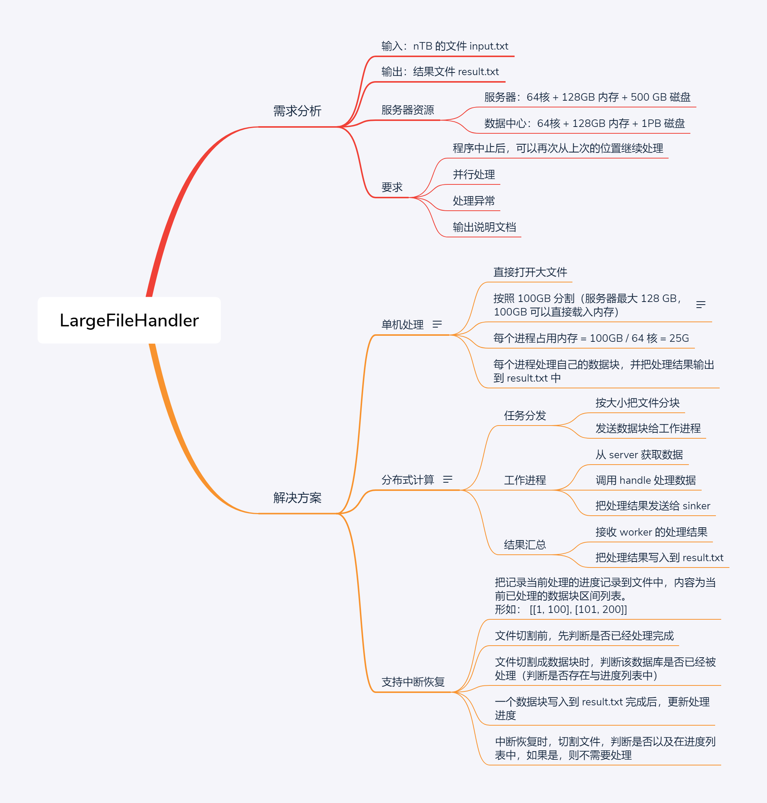

有一个很大的文本文件，它的大小可能有 几TB，其中存储的任何行的架构文本文件如下：
{
"id": string, // uuid, it is unique in this file
"symbol": string, // symbol
"price": double, // the price of the symbol
"quantity": double, // the quantity of the symbol
"type": string, // the type, the optional value may be stock, future, option, fund.
"datetime": string, // the datetime of the current line
}
有一个函数可以处理一行，签名如下：
def handle(id:str, symbol:str, price: Decimal, quantity:Decimal, type: str, dt: datetime) -> str:
# Hide detail code
pass
您需要将句柄函数的结果写入另一个名为 result.txt 的文本文件，并且随意将结果写入 result.txt，你可以乱写，如果逐行处理这个文件将很容易完成任务。
你能写出最简单的程序来逐行处理文件吗？
你能设计一个高效的程序来同时处理这个文件吗？请注意以下任何一项：
并行处理的程度。
程序中断后，在下次启动时继续处理。
您要处理的其他异常。
请告诉我们您的设计理念，自由写设计文档，比如只写字，绘制设计图（UML 或流程图），编写伪代码等。
如果您完成了代码，您将非常出色。
handle 函数处理时，一整行在被处理时不依赖文件中的其他行。
我们进一步测试发现 handle 函数的消耗时间是随机的，这不是一个错误，因为耗时取决于数据计算的复杂性。
假设有多台电脑，其中任何一台都是 64核、128GB内存，500GB 硬盘，有一个数据存储服务器，配置是 64核、128GB内存、1PB 硬盘。
注意记录任何对我们后期调试有用的方法的调试消息，如果出现任何异常。
如果需要，请随意使用第三方库，例如 Message Queue 和 Log。
如果您有任何问题，请尽快告诉我们。

# 文件已有行数 n
# 一下命令生成 n * 2^30 行数据
# generate test file input.txt
content='{"id": "c9b72270-b548-47f5-af9d-6372846bd758", "symbol": "166842.XSHE", "price": 66.51, "quantity": 295, "type": "feature", "datetime": "2011-07-16 00:42:32481"}' > input.txt
echo $content > input.txt
# it will generate 1 * 2^30 lines
# _1GB = 1073741824 bytes
# lines = _1GB / sizeof($content) # 6669203.875776397 lines
# 2^22 = 4194304 lines -----> 644 MB
# 2^23 = 8388608 lines -----> 1.2578125 GB
# 2^24 = -----> 2.515625 GB
# 2^25 = -----> 5.03125 GB
# 2^26 = -----> 10.0625 GB
# 2^27 = -----> 20.125 GB
# 2^28 = -----> 40.25 GB
# 2^29 = -----> 80.5 GB
# 2^30 = -----> 161.0 GB
for i in {1..22}; do cat input.txt input.txt > input2.txt && mv input2.txt input.txt; done
wc input.txt
生成 input.txt 输入文件时，所有行的内容全部设置一样，最终判断一下 input.txt 和 result.txt 的 md5 是否一样即可
如下格式的一条数据，存储占用 161 字节，1TB 大小的文件
{
"id": "c9b72270-b548-47f5-af9d-6372846bd758",
"symbol": "166842.XSHE",
"price": 66.51,
"quantity": 295,
"type": "feature",
"datetime": "2011-07-16 00:42:32481"
}
_1KB = 1024 # byte
_1MB = 1024 * 1024
_1GB = 1024 * 1024 * 1024
# = 1073741824 byte
# ==> 1073741824 / 161 = 6669203.875776397 ≈ 667 0000 （667 万）行
_1TB = 1024 * 1024 * 1024 * 1024
# = 1099511627776 byte
# = 1099511627776 / 161 = 6829264768.795031 约等于 68 2926 4768 （68 亿) 行
_100GB = 100 * 1024 * 1024 * 1024
import mullprocessing as mp
_PER_PROCESS_LOAD = _100GB / mp.cpu_count() / _1GB = 25.0
_128GB = 128 * 1024 * 1024 * 1024
# = 137438953472 KB
# ==> 137438953472 / 161 = 853658096.0993788 ≈ 8 5365 8096 （8.5 亿）行
PC_CNT = _1TB / _128GB
# = 8.0
# ==> 即需要 8 台 128GB 的机器才能一次性全部读取这批数据到内存
如果在一台服务器上处理（即题目中提及的数据存储服务器），磁盘足够大，那么只需要考虑的就是内存问题；
如果在题目中提及的非数据存储服务器上执行，需要考虑磁盘和内存问题，这个大文件肯定需要从数据存储服务器读取，所以还有网络通信的开销
直接在数据存储服务器上操作，这个服务器磁盘空间足够，只需要考虑内存问题即可。（一般不允许这样操作，数据存储服务器是很重要的服务资源，一旦瘫痪，后果不堪设想）
读文件
从数据中心的机器上读入大文件，然后按照 100GB 进行切割，每个进程需要读入 100GB / 64核 = 1.5625 GB 的数据到内存
打开输入文件，用生成器按照 $CHUNK_SIZE 大小将文件方块，并传入到子进程中
子进程打开文件，根据文件快的起始位置和大小，读入自己负责的那部分数据
处理数据，可以通过 splitlines() 把数据按行切割，进行后序处理
写文件
多个进程各自处理各自的数据，但是最终都要输出到同一个文件，不控制的话，内容就会乱序，但是题目说，允许乱序
也可以用 multiprocessing 的 callback 参数来处理子进程的执行结果，由父进程来完成文件写入
# 进入工程目录
$cd ~/LargeFileHandler/solution_with_several_machine
# 生成测试数据
$bash ../tools/fake.sh
# 开始处理
$rm result.txt && python main.py
以下为处理一个 41M 大小的文件的日志输出

$cd ~/LargeFileHandler/solution_with_single_machine
$rm -rf result.txt .run && python3 main.py
===== latest mission progress: [] =====
===== input file size: 42467328 =====
5.68897819519043 MB of 40.5 MB bytes read (14%) =====> 分块，每块大小约为 5.69 MB
pid:[961] warking between [0, 5965326] =====> 分块和子进程的处理可并行
11.37795639038086 MB of 40.5 MB bytes read (28%)
pid:[962] warking between [5965326, 11930652]
17.06693458557129 MB of 40.5 MB bytes read (42%)
22.75591278076172 MB of 40.5 MB bytes read (56%)
28.44489097595215 MB of 40.5 MB bytes read (70%)
34.13386917114258 MB of 40.5 MB bytes read (84%)
39.82284736633301 MB of 40.5 MB bytes read (98%)
40.5 MB of 40.5 MB bytes read (100%)
===== file chunk done =====
pid:[961] progress [0, 5965326] done
pid:[961] warking between [11930652, 17895978]
pid:[962] progress [5965326, 11930652] done
pid:[962] warking between [17895978, 23861304]
pid:[961] progress [11930652, 17895978] done
pid:[961] warking between [23861304, 29826630]
pid:[962] progress [17895978, 23861304] done
pid:[962] warking between [29826630, 35791956]
pid:[961] progress [23861304, 29826630] done
pid:[961] warking between [35791956, 41757282]
pid:[962] progress [29826630, 35791956] done
pid:[962] warking between [41757282, 42467328]
pid:[962] progress [41757282, 42467328] done =====> 子进程 962 的最终处理进度
pid:[961] progress [35791956, 41757282] done =====> 子进程 961 的最终处理进度
=====> 可以看到最后一个数据块被 962 处理了
##### 两个进程的处理进度和 input.txt 文件大小一致，证明处理完成
$stat input.txt
File: input.txt
Size: 42467328 Blocks: 82944 IO Block: 512 regular file
Device: 42h/66d Inode: 48132221017522339 Links: 1
##### 因为构造文件的所有行都是一样的，所以 input.txt 和 result.txt 的 md5 一致，可以说明文件处理正确
$md5sum input.txt result.txt
305e85f7574e39fb41de62ff6ee37e03 input.txt
305e85f7574e39fb41de62ff6ee37e03 result.txt
$wc input.txt result.txt
262144 3407872 42467328 input.txt
262144 3407872 42467328 result.txt
当前运行状态
# 查看上一次任务的 928 进程的处理记录
$cat ~/LargeFileHandler/solution_with_single_machine/.run/928.run_id
[0,5965326]
[17895978,23861304]
[29826630,35791956]
[41757282,42467328]
# 查看上一次任务的 929 进程的处理记录
$cat ~/LargeFileHandler/solution_with_single_machine/.run/929.run_id
[5965326,11930652]
[11930652,17895978]
[23861304,29826630]
[35791956,41757282]
huangjinjie@Sangfor-PC:/mnt/f/LargeFileHandler/LargeFileHandler/solution_with_single_machine/.run$ rm 928.run_id
删掉其中一个运行状态记录文件，模拟运行过程中中断的场景，然后继续运行程序，期望可以继续处理
$cd ~/LargeFileHandler/solution_with_single_machine
$rm ./.run/928.run_id
$python3 main.py
===== latest mission progress: [[5965326, 11930652], [11930652, 17895978], [23861304, 29826630], [35791956, 41757282]] =====
=====> 可以看到，目前已经处理了的数据块
===== input file size: 42467328 =====
5.68897819519043 MB of 40.5 MB bytes read (14%)
pid:[947] warking between [0, 5965326]
chunk [5965326, 11930652] already handled. =====> 【已经处理的数据块自动跳过】
chunk [11930652, 17895978] already handled.
11.37795639038086 MB of 40.5 MB bytes read (28%)
pid:[948] warking between [17895978, 23861304]
chunk [23861304, 29826630] already handled.
17.06693458557129 MB of 40.5 MB bytes read (42%)
chunk [35791956, 41757282] already handled.
17.74408721923828 MB of 40.5 MB bytes read (43%)
===== file chunk done =====
pid:[948] progress [17895978, 23861304] done
pid:[948] warking between [29826630, 35791956]
pid:[947] progress [0, 5965326] done
pid:[947] warking between [41757282, 42467328]
pid:[947] progress [41757282, 42467328] done
pid:[948] progress [29826630, 35791956] done
运行过程中按下 Ctrl + z 中断程序，期望再次运行时，只处理剩下的数据
$cd ~/LargeFileHandler/solution_with_single_machine
$rm -rf .run && python3 main.py
===== latest mission progress: [] =====
===== input file size: 42467328 =====
5.68897819519043 MB of 40.5 MB bytes read (14%)
pid:[1004] warking between [0, 5965326]
11.37795639038086 MB of 40.5 MB bytes read (28%)
pid:[1005] warking between [5965326, 11930652]
17.06693458557129 MB of 40.5 MB bytes read (42%)
22.75591278076172 MB of 40.5 MB bytes read (56%)
28.44489097595215 MB of 40.5 MB bytes read (70%)
34.13386917114258 MB of 40.5 MB bytes read (84%)
39.82284736633301 MB of 40.5 MB bytes read (98%)
40.5 MB of 40.5 MB bytes read (100%)
===== file chunk done =====
pid:[1005] progress [5965326, 11930652] done
pid:[1005] warking between [11930652, 17895978]
pid:[1004] progress [0, 5965326] done
pid:[1004] warking between [17895978, 23861304]
pid:[1005] progress [11930652, 17895978] done
pid:[1005] warking between [23861304, 29826630]
pid:[1004] progress [17895978, 23861304] done
pid:[1004] warking between [29826630, 35791956]
pid:[1005] progress [23861304, 29826630] done
pid:[1005] warking between [35791956, 41757282]
pid:[1004] progress [29826630, 35791956] done
pid:[1004] warking between [41757282, 42467328]
pid:[1004] progress [41757282, 42467328] done
^CTraceback (most recent call last): =====> 运行过程中按下 Ctrl+z 中断程序
File "main.py", line 91, in <module>
Process ForkPoolWorker-1:
main()
File "main.py", line 87, in main
Process ForkPoolWorker-2:
pool.join()
File "/usr/lib/python3.8/multiprocessing/pool.py", line 662, in join
self._worker_handler.join()
File "/usr/lib/python3.8/threading.py", line 1011, in join
self._wait_for_tstate_lock()
File "/usr/lib/python3.8/threading.py", line 1027, in _wait_for_tstate_lock
elif lock.acquire(block, timeout):
KeyboardInterrupt
查看运行记录文件
$cd ~/LargeFileHandler/solution_with_single_machine
$cat .run/*
=====> 只记录了 6 个数据块，正常应该有 8 个数据块
=====> 数据块 [42467328, 42467328] 和 [35791956, 41757282] 未被处理
[0,5965326]
[17895978,23861304]
[29826630,35791956]
[41757282,42467328]
[5965326,11930652]
[11930652,17895978]
[23861304,29826630]
$cat .run/1004.run_id
[0,5965326]
[17895978,23861304]
[29826630,35791956]
[41757282,42467328]
$cat .run/1005.run_id
[5965326,11930652]
[11930652,17895978]
[23861304,29826630]
中断后，再次运行
$cd ~/LargeFileHandler/solution_with_single_machine
$python3 main.py
===== latest mission progress: [[0, 5965326], [17895978, 23861304], [29826630, 35791956], [41757282, 42467328], [5965326, 11930652], [11930652, 17895978], [23861304, 29826630]] =====
===== input file size: 42467328 =====
===== chunk [0, 5965326] already handled.
===== chunk [5965326, 11930652] already handled.
===== chunk [11930652, 17895978] already handled.
===== chunk [17895978, 23861304] already handled.
===== chunk [23861304, 29826630] already handled.
===== chunk [29826630, 35791956] already handled.
5.68897819519043 MB of 40.5 MB bytes read (14%)
===== chunk [41757282, 42467328] already handled.
pid:[1025] warking between [35791956, 41757282]
5.68897819519043 MB of 40.5 MB bytes read (14%)
===== file chunk done =====
pid:[1026] warking between [42467328, 42467328]
pid:[1026] progress [42467328, 42467328] done =====> 【只处理了上次任务中断未处理的数据块】
pid:[1025] progress [35791956, 41757282] done
$md5sum result.txt input.txt =====> 判断一下文件完整行，证明，可以中断继续处理
305e85f7574e39fb41de62ff6ee37e03 result.txt
305e85f7574e39fb41de62ff6ee37e03 input.txt
1296MB 的文件按照 341.3MB 一个数据块进行划分，4 核机器，每个进程处理 341.3MB / 4 = 85.325MB ≈ 86 MB
1296MB / 86MB = 15.06，向上取整，即需要写入 16 次
chunk_size: 89478486
per_cpu_handle_size: 357913941.3333333
cpu_count: 4
file_size: 1358954496
85.33343696594238 MB of 1296.0 MB bytes read (6%)
170.66687393188477 MB of 1296.0 MB bytes read (13%)
256.00031089782715 MB of 1296.0 MB bytes read (19%)
341.33374786376953 MB of 1296.0 MB bytes read (26%)
426.6671848297119 MB of 1296.0 MB bytes read (32%)
512.0006217956543 MB of 1296.0 MB bytes read (39%)
597.3340587615967 MB of 1296.0 MB bytes read (46%)
682.6674957275391 MB of 1296.0 MB bytes read (52%)
768.0009326934814 MB of 1296.0 MB bytes read (59%)
853.3343696594238 MB of 1296.0 MB bytes read (65%)
938.6678066253662 MB of 1296.0 MB bytes read (72%)
1024.0012435913086 MB of 1296.0 MB bytes read (79%)
1109.334680557251 MB of 1296.0 MB bytes read (85%)
1194.6681175231934 MB of 1296.0 MB bytes read (92%)
1280.0015544891357 MB of 1296.0 MB bytes read (98%)
1365.334888458252 MB of 1296.0 MB bytes read (105%)
write to result: (1085, 552337)
write to result: (1087, 552337)
write to result: (1086, 552337)
write to result: (1088, 552337)
write to result: (1085, 552337)
write to result: (1087, 552337)
write to result: (1086, 552337)
write to result: (1088, 552337)
write to result: (1085, 552337)
write to result: (1087, 552337)
write to result: (1086, 552337)
write to result: (1088, 552337)
write to result: (1088, 103553)
write to result: (1085, 552337)
write to result: (1087, 552337)
write to result: (1086, 552337)
real 1m1.010s
user 2m47.969s
sys 0m25.844s
$md5sum result.txt
c71d983dba489f54741c46dcefba2580 result.txt
$md5sum input.txt
c71d983dba489f54741c46dcefba2580 input.txt

ventilator
打开 input.txt 文件，用迭代的方式，按照 $CHUNK_SIZE 大小进行切分，并把数据分发给 worker。打开文件的方式和单机处理的方式一样，只是回调函数换成了发送数据给工作进程
worker
从 ventilator 接收数据，并进行处理，最终把处理结果推给 sinker。
sinker
接收 worker 的处理结果，并写入到结果文件 result.txt
# 进入工程目录
$cd ~/LargeFileHandler/solution_with_several_machine
# 生成测试数据
$bash tools/fake.sh
##### 在数据存储服务执行 #####
$python server/server.py
$python server/sinker.py
##### 在其他多个节点执行 #####
$python client/client.py
模块任务是读入文件，并按照 $CHUNK_SIZE 大小进行分块，然后发送给连接到服务器的客户端进行处理
读入文件切块和发送文件两个过程，可通过协程优化，两者交替进行，效果如下
$python server/server.py
85.33343696594238 MB of 648.0 MB bytes read (13%) =============> 读取文件块
work with chunk: [0, 89478594] =============> 发送文件块
[2022-04-24 23:53:12] send 89478594 bytes to worker
170.66687393188477 MB of 648.0 MB bytes read (26%)
work with chunk: [89478594, 178957188]
[2022-04-24 23:53:13] send 89478594 bytes to worker
256.00031089782715 MB of 648.0 MB bytes read (39%)
work with chunk: [178957188, 268435782]
[2022-04-24 23:53:14] send 89478594 bytes to worker
341.33374786376953 MB of 648.0 MB bytes read (52%)
work with chunk: [268435782, 357914376]
[2022-04-24 23:53:16] send 89478594 bytes to worker
426.6671848297119 MB of 648.0 MB bytes read (65%)
work with chunk: [357914376, 447392970]
[2022-04-24 23:53:17] send 89478594 bytes to worker
512.0006217956543 MB of 648.0 MB bytes read (79%)
work with chunk: [447392970, 536871564]
[2022-04-24 23:53:18] send 89478594 bytes to worker
597.3340587615967 MB of 648.0 MB bytes read (92%)
work with chunk: [536871564, 626350158]
[2022-04-24 23:53:19] send 89478594 bytes to worker
682.6673927307129 MB of 648.0 MB bytes read (105%)
work with chunk: [626350158, 715828644]
[2022-04-24 23:53:20] send 89478486 bytes to worker
distribute [8 missions] finish.
接收客户端的处理结果，并进行整合，输出到结果文件 result.txt
接收服务端的数据块，并用多进程进行处理，把处理结果发送给 Sinker
发送子进程的处理结果和处理数据块，可以用协程进行优化，从日志可以看到，两者可以交替执行
[2022-04-24 23:45:39] pid: [6323] sending... =============> 发送处理的结果
[2022-04-24 23:45:39] pid: [6343] handling... =============> 处理接收的数据
[2022-04-24 23:45:39] pid: [6340] handling...
[2022-04-24 23:45:39] pid: [6341] handling...
[2022-04-24 23:45:39] pid: [6342] handling...
[2022-04-24 23:45:39] pid: [6323] sending...
[2022-04-24 23:45:39] pid: [6343] handling...
[2022-04-24 23:45:39] pid: [6340] handling...
[2022-04-24 23:45:39] pid: [6341] handling...
[2022-04-24 23:45:39] pid: [6342] handling...
[2022-04-24 23:45:39] pid: [6323] sending...
[2022-04-24 23:45:39] pid: [6343] handling...
[2022-04-24 23:45:39] pid: [6340] handling...
[2022-04-24 23:45:39] pid: [6341] handling...
[2022-04-24 23:45:39] pid: [6342] handling...
[2022-04-24 23:45:39] pid: [6323] sending...
[2022-04-24 23:45:39] pid: [6343] handling...
[2022-04-24 23:45:39] pid: [6340] handling...
[2022-04-24 23:45:39] pid: [6341] handling...
[2022-04-24 23:45:39] pid: [6342] handling...
[2022-04-24 23:45:39] pid: [6323] sending...